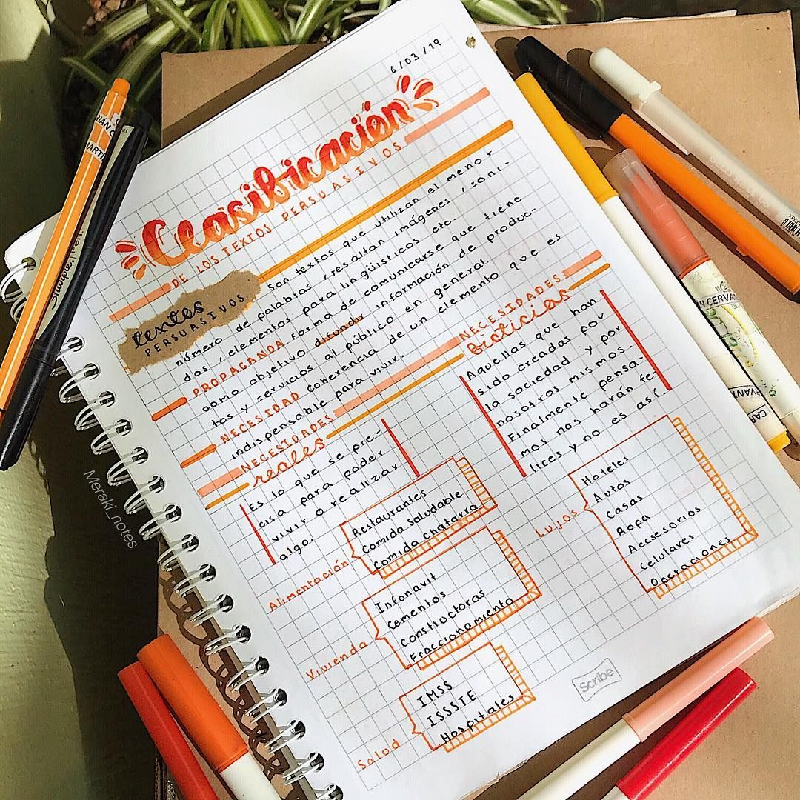
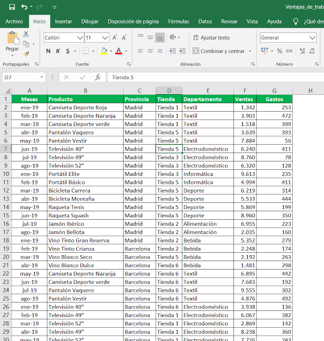
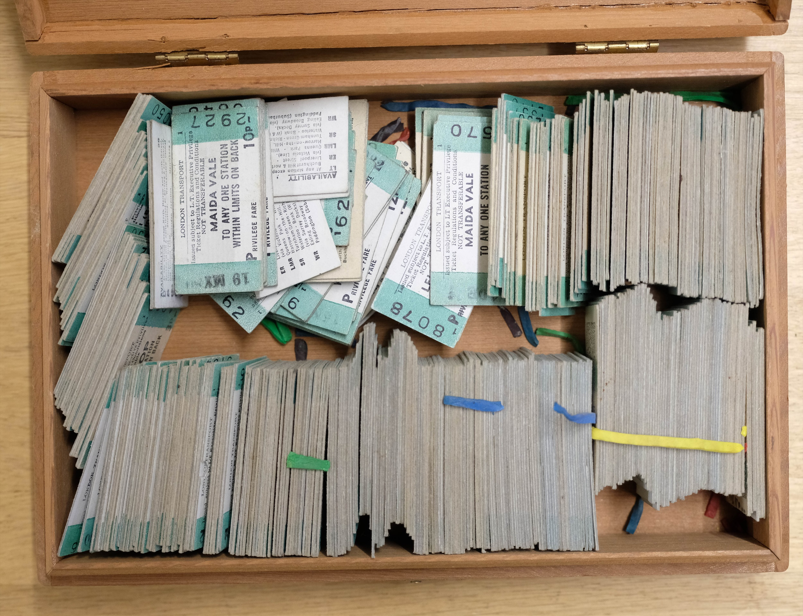
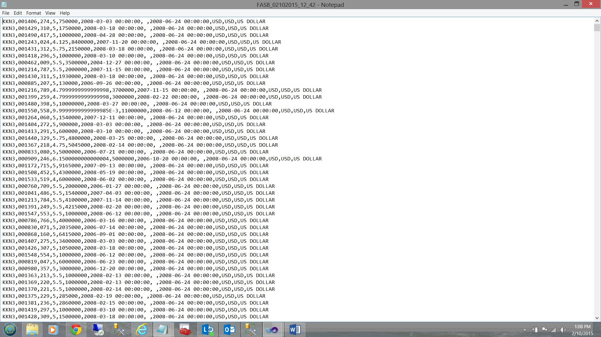
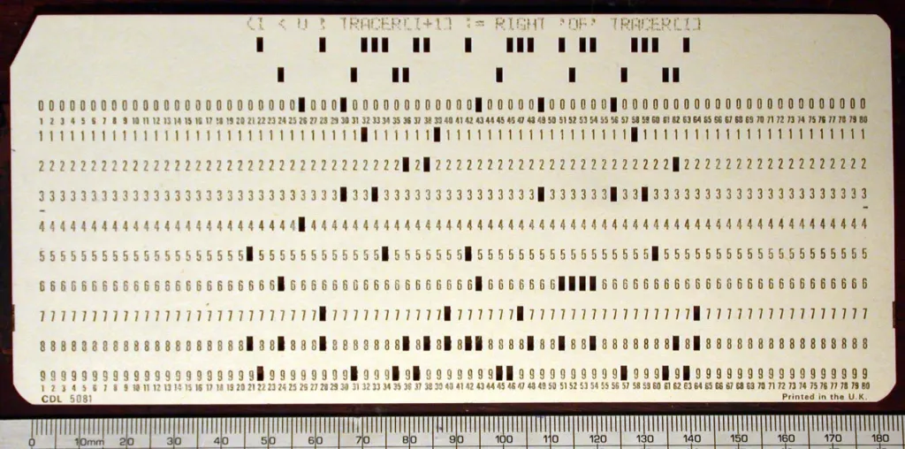

- .01¿Qué es una base de datos?
- .02SQL
- .03Comandos básicos
- .04Manos a la obra: levantando Postgres
- .05Práctica: Juegos Suramericanos Santa Fe 2026
- .06Cierre




Sí
- Planilla de Excel: columnas definidas, se puede ordenar y filtrar
- Fichero de biblioteca: ordenado, se busca rápido
- Contactos del celular: cada contacto con los mismos campos, buscador
- Un CSV: sí, si se usa bien (mismas columnas en todas las filas, una fila por registro)
No
- El cuaderno: tiene información, pero no está organizada ni facilita buscar
- Los tickets en el cajón: son datos, pero amontonados
- La información está organizada de una forma que se conoce de antemano
- Gracias a eso se puede buscar, recuperar y modificar fácilmente
- Almacenamiento organizado de información
- Facilitan la búsqueda, recuperación y gestión de datos
- Son esenciales para las aplicaciones web
- No todo conjunto de datos es una base de datosTip
- Base de datos: la información propiamente dicha (al final, son archivos)
- Motor: el encargado de guardar y trabajar con esa información
- Gestor/Cliente: la interfaz que nos ayuda a hablar con el motor
- PostgreSQL — open source, potente y flexible. Es la base de datos más usada según la encuesta de Stack Overflow 2025: la usa el 55,6 % de los desarrolladoresTip
- MySQL — open source, hoy mantenida por Oracle. Segunda en la misma encuesta (40,5 %). Es la base de WordPress, que a su vez está detrás de gran parte de los sitios web.
- SQL Server — de Microsoft; la usan empresas que ya pagan licencias de Microsoft
¿Cuál vamos a usar nosotros? PostgreSQL.
- DBeaver — multiplataforma: funciona con PostgreSQL, MySQL, SQL Server y otros motores. Interfaz amigable
- pgAdmin — pensado específicamente para PostgreSQL
- MySQL Workbench — pensado específicamente para MySQL
- Clientes de terminal — cada motor trae el suyo:
psql(PostgreSQL),mysql(MySQL),sqlcmd(SQL Server)Tip
- Volumen: ¿cuánto ocupa guardar nombre y apellido de todos los argentinos? ~20 bytes × 46 millones ≈ 1 GB, solo de nombres
- Búsqueda: y encontrar a una persona entre 46 millones... ¿leyendo de a una?
- Muchos usuarios a la vez: un banco no puede tener un solo empleado mirando el libro de cuentas
- Consistencia: si dos cajeros modifican la misma cuenta al mismo tiempo, ¿cuál gana?
Los archivos sueltos no resolvían nada de esto.
- Libros contables, fichas y carpetas guardadas en cajones y estanterías
- Para encontrar un dato había que ir hasta el archivo y buscarlo a mano
- Copiar, ordenar o cruzar información llevaba días

- Cada tarjeta es un registro: una persona, una venta, un empleado
- Los datos se codifican con agujeros en posiciones fijas: la posición del agujero indica el valor
- Una máquina lee las tarjetas haciendo pasar corriente por los agujeros, y cuenta o clasifica automáticamente
- Herman Hollerith las usó para procesar el censo de EE.UU. de 1890. Su empresa terminaría siendo IBM
- Para buscar un registro había que pasar todo el mazo por la máquina
- Los datos se graban uno detrás de otro sobre una cinta magnetizada
- Se leen en orden, de principio a fin: para encontrar un registro había que recorrer toda la cinta
- Para modificar un dato, en general había que reescribir la cinta entera en otra cinta
- Aparecen los discos: se puede saltar directo a cualquier parte de los datos
- Surgen las primeras bases de datos (por ejemplo, IMS de IBM, usada en el programa Apolo)
- Para consultar, el programa tenía que indicar el camino: ir de registro en registro siguiendo los enlaces entre ellos
- 1970 — Edgar F. Codd (IBM) publica el modelo relacional: los datos se guardan en tablas, y uno pide qué quiere, no cómo buscarlo
- 1974 — System R (IBM) e Ingres (Berkeley): los primeros prototipos relacionales. Nace SQL.
- 1979 — Oracle lanza la primera base de datos relacional comercial con SQL
- 1986 — SQL se vuelve estándar (ANSI): el mismo lenguaje sirve para distintos motores
- 1986 — Postgres nace en Berkeley como sucesor de Ingres
- Organiza los datos en tablas: filas y columnas
- Cada tabla guarda un tipo de cosa: deportistas, sedes, deportes...
- Cada fila se identifica de forma única (con un
id) - Las tablas se pueden vincular entre sí (lo vemos la clase que viene)
Codd se basó en la matemática: a una tabla la llamó relación, porque cada fila relaciona valores que van juntos.
nombre | apellido | país | deporte
---------+----------+-----------+---------
Pascual | Di Tella | Argentina | EsgrimaEsta fila dice: "Pascual" va con "Di Tella", con "Argentina" y con "Esgrima". Esa combinación es la relación.
Structured Query Language — Lenguaje de Consultas Estructurado.
Es el lenguaje estándar para gestionar bases de datos relacionales. Nos da un estándar para hablarle a una base de datos.
- Crear y modificar bases de datos
- Definir la estructura de las tablas
- Insertar, modificar y eliminar datos
- Consultar información de manera eficienteTip
Como con Git: hay comandos que se usan una vez por proyecto y otros que se usan cotidianamente.
- 1974: Donald Chamberlin y Raymond Boyce (IBM) lo diseñan para System R. Se llamaba SEQUEL
- Se le cambia el nombre a SQL por un problema de marca registrada
- 1986: se vuelve estándar ANSI
- Hoy: el estándar se sigue actualizando, y casi todo lo que está hecho sigue usando SQL
- SIU Guaraní — el sistema de inscripciones de la facultad funciona sobre PostgreSQL
- Instagram — nació y creció sobre PostgreSQL
- Facebook, YouTube y Wikipedia — usan MySQL (o su derivado MariaDB) a escala enorme
- Chrome y Firefox — el historial y los marcadores del navegador están en SQLite
SQL
- Es el lenguaje
- Lo estándar funciona en cualquier motor
PostgreSQL
- Es el motor
- Agrega sintaxis propia que puede no funcionar en otros motores
CREATE DATABASE suramericanos;
DROP DATABASE suramericanos;- Toda sentencia termina con punto y coma
; CREATE DATABASEse utiliza muy pocas veces (una por proyecto)DROP DATABASEborra la base con todas sus tablasDanger
Una tabla es una matriz de doble entrada:
- Columnas: los atributos (nombre, apellido, ciudad...)
- Filas: los datos. Cada fila es un registro (record)
CREATE TABLE clientes (
id INT,
nombre VARCHAR(50),
apellido VARCHAR(50)
);CREATE TABLE→ palabras reservadasclientes→ nombre de la tabla (en general en plural)- Entre paréntesis:
nombre_columna TIPO, separadas por coma - Esto crea la estructura: todavía no hay datos
- Números enteros:
INT(oINTEGER),SMALLINT,BIGINTpara valores muy grandes - Números con decimales:
DECIMAL(10, 2)para valores exactos como precios;REALpara aproximados - Texto:
VARCHAR(50)→ hasta 50 caracteres (variable character);CHAR(3)→ largo fijo (ej. código de paísARG);TEXT→ sin límite - Booleanos:
BOOLEAN - Fechas y horas:
DATE('2026-09-12'),TIME,TIMESTAMP(fecha + hora)
INSERTINSERT INTO clientes (id, nombre, apellido)
VALUES (1, 'Juan', 'Pérez');- Inserta una fila nueva en la tabla
- Entre paréntesis indicamos qué columnas llenamos y en qué orden
- Se pueden omitir columnas que acepten nulos
DELETEDELETE FROM clientes WHERE id = 1;- Borra todas las filas que cumplan la condición del
WHERE - La fila no queda vacía: deja de existir
WHERE nombre = 'Santiago'→ ¿cuántos Santiagos hay? Los borra a todos- No hay Ctrl+Z en SQLDanger
UPDATEUPDATE clientes
SET apellido = 'García'
WHERE id = 2;- Se lee casi en castellano: "modificá clientes, poné apellido García donde el id sea 2"
SETdice qué cambia,WHEREdice a quién- Si nos olvidamos del
WHERE... todas las filas pasan a llamarse GarcíaDanger
SELECTEl comando más usado. Tiene tres partes:
SELECT→ qué columnas quiero verFROM→ de qué tabla(s)WHERE→ cómo filtro (opcional)
SELECT * FROM clientes;
SELECT nombre, apellido FROM clientes WHERE ciudad = 'Madrid';*es un comodín: "todas las columnas"- La lógica del
WHEREes la misma enSELECT,UPDATEyDELETE
- En línea: un entorno de SQL en el navegador, sin instalar nada
- Docker + terminal: PostgreSQL en un contenedor, y consultas con
psql - Docker + gestor gráfico: el mismo contenedor, y consultas desde DBeaver
La opción en línea sirve para practicar, pero no alcanza para el TP finalWarning
- Cada proyecto puede usar una versión distinta de Postgres, y conviven sin conflicto en distintos puertos
- Mismo entorno para todo el equipo: misma versión y misma configuración
- La configuración queda en un archivo (
docker-compose.yml) que se versiona con Git junto al proyecto - Configuración inicial automática: el usuario, la contraseña y la base se crean solos al levantar el contenedorTip
docker-compose.ymlservices:
postgres:
image: postgres:18
ports:
- "5432:5432"
volumes:
- pgdata:/var/lib/postgresql
environment:
POSTGRES_USER: postgres
POSTGRES_PASSWORD: postgres
POSTGRES_DB: suramericanos
volumes:
pgdata:Variables de entorno disponibles: https://hub.docker.com/_/postgres#environment-variables
docker compose up -d
docker ps
docker exec -it <container> bash
psql -U postgres -d suramericanosdocker exec -it <container> psql -U postgres -d suramericanos- Podemos usar el nombre del contenedor en vez del ID (el ID cambia)Tip
- ¿Y la contraseña? Dentro del contenedor, la imagen confía en las conexiones locales y no la pide. Desde afuera (por ejemplo, DBeaver) sí la pideNota
psql\l— lista las bases de datos\c suramericanos— se conecta a una base\dt— lista las tablas\d deportistas— describe una tabla\q— sale
En la terminal, sin ; la sentencia no se ejecutaWarning
- 12 al 26 de septiembre de 2026, organizados por la provincia de Santa Fe
- Sedes principales: Rosario (35 disciplinas y la ceremonia inaugural), Santa Fe y Rafaela
- Subsedes: Paraná (softbol), Mar del Plata (surf) y CABA (bolos)
- 43 deportes, y Argentina compite con 658 atletas
¿Cómo guardarían toda esta información?Info
¿Qué tablas necesitamos? ¿Qué columnas tiene cada una?
Deportistas
- nombre, apellido
- país, deporte
- prueba (ej. sable individual)
Sedes
- ciudad, provincia
- cantidad de disciplinas
- qué deportista compite en qué sede y qué medallas gana → la clase que viene (relaciones)
- ¿El apellido? Pascual e Isabel Di Tella son dos medallistas distintos
- ¿El nombre y apellido? Puede haber dos deportistas que se llamen igual
- Casi nunca los datos "del problema" garantizan ser únicos
- Siempre vamos a necesitar identificar unívocamente cada registro
- Estándar: agregar una columna
idTip
La primary key (PK) es el atributo que elegimos para identificar unívocamente a cada fila de una tabla. Si conocemos el valor de la PK, conocemos exactamente una fila, sin ambigüedad.
- En la vida real ya las usamos: el CUIL de una persona, el legajo en FIUBA, la patente de un auto
- Buscamos al alumno con legajo 112233 → hay uno solo
- Buscamos al alumno que se llama Santiago → ¿cuál de todos?
- Única: no puede haber dos filas con el mismo valor
- Obligatoria: ninguna fila puede no tenerla (nunca
NULL) - Estable: no debería cambiar con el tiempo — otras tablas la van a usar para referirse a esa filaWarning
- Una sola por tabla: puede haber muchos datos únicos, pero uno solo es el identificador
Natural
- Un dato del problema que ya es único: CUIL, patente, legajo
- Tiene significado propio
- Riesgo: ¿y si cambia? ¿y si aparece un repetido? ¿y si alguien no lo tiene?
Artificial (id)
- Un número que inventamos solo para identificar
- No significa nada fuera de la base
- Nunca cambia y nunca se repite → la opción más usadaTip
CREATE TABLE deportistas (
id INT,
nombre VARCHAR(50),
apellido VARCHAR(50),
pais VARCHAR(50),
deporte VARCHAR(50),
localidad VARCHAR(100)
);¿Qué problemas tiene? ¿Puede un deportista no tener nombre? ¿Dos deportistas con el mismo id?
Una restricción que le ponemos a una columna (o a la tabla) y que el motor hace cumplir:
- Si un
INSERToUPDATEla viola, el motor rechaza la operación y devuelve un error - Protegen la integridad de los datos: nada inválido entra a la tabla
- SQL no adivina qué columnas deben ser únicas u obligatorias: se lo tenemos que decirWarning
- Las que vemos hoy:
NOT NULL,UNIQUE,PRIMARY KEY. La clase que viene:FOREIGN KEY(para vincular tablas)Info
NOT NULL y PRIMARY KEYDROP TABLE deportistas;
CREATE TABLE deportistas (
id INT PRIMARY KEY,
nombre VARCHAR(50) NOT NULL,
apellido VARCHAR(50) NOT NULL,
pais VARCHAR(50) NOT NULL,
deporte VARCHAR(50) NOT NULL,
localidad VARCHAR(100)
);NOT NULL→ la columna es obligatoriaPRIMARY KEY→ el identificador de cada filalocalidadqueda opcional: puede serNULL
UNIQUEEl valor no se puede repetir entre filas, pero no es el identificador de la tabla:
CREATE TABLE usuarios (
id INT PRIMARY KEY,
email VARCHAR(100) UNIQUE NOT NULL,
nombre VARCHAR(50) NOT NULL
);- Dos usuarios no pueden tener el mismo email...
- ...pero a cada fila la identificamos por su
id - Una tabla puede tener varias columnas
UNIQUE
UNIQUE vs PRIMARY KEYUNIQUE
- El valor no se puede repetir entre filas
- Acepta
NULL(salvo que le agreguemosNOT NULL) - Una tabla puede tener varias
PRIMARY KEY
- Es
UNIQUE+NOT NULL - Es el identificador de la fila: la usan otras tablas para referenciarla
- Una sola por tabla
Las constraints también se pueden declarar al final, con nombre propio:
CREATE TABLE usuarios (
id INT,
email VARCHAR(100) NOT NULL,
nombre VARCHAR(50) NOT NULL,
CONSTRAINT pk_usuarios PRIMARY KEY (id),
CONSTRAINT email_unico UNIQUE (email)
);- Hay muchas formas de escribir lo mismo: busquen la sintaxis de su motorTip
- Si no les ponemos nombre, Postgres genera uno automáticamente (ej.
deportistas_pkey)
INSERT INTO deportistas (id, nombre, apellido, pais, deporte, prueba)
VALUES (1, 'Pascual', 'Di Tella', 'Argentina', 'Esgrima', 'Sable individual');
INSERT INTO deportistas (id, nombre, apellido, pais, deporte, prueba)
VALUES (2, 'Macarena', 'Ceballos', 'Argentina', 'Natación', '100 metros pecho');
INSERT INTO deportistas (id, nombre, apellido, pais, deporte, prueba)
VALUES (3, 'Julieta', 'Lucas', 'Argentina', 'Gimnasia', 'All around');¿Qué pasa si insertamos dos veces con id = 1?Info
INSERT INTO deportistas (id, nombre, apellido, pais, deporte)
VALUES (1, 'Pascual', 'Di Tella', 'Argentina', 'Esgrima');
ERROR: duplicate key value violates unique constraint "deportistas_pkey"
DETAIL: Key (id)=(1) already exists.INSERT INTO deportistas (id, apellido, pais, deporte)
VALUES (7, 'Kalejman', 'Argentina', 'Ciclismo');
ERROR: null value in column "nombre" of relation "deportistas"
violates not-null constraintLos errores dicen qué constraint se violó y con qué valorTip
INSERT INTO deportistas (id, nombre, apellido, pais, deporte, prueba)
VALUES (4, 'Micaela', 'Levaggi', 'Argentina', 'Atletismo', '1500 metros');
INSERT INTO deportistas (id, nombre, apellido, pais, deporte, prueba)
VALUES (5, 'Alejo', 'Suter', 'Argentina', 'Escalada', 'Boulder');
INSERT INTO deportistas (id, nombre, apellido, pais, deporte, prueba)
VALUES (6, 'Lucía', 'Falasca', 'Argentina', 'Vela', 'ILCA 6');- Por ahora el
idlo incrementamos a mano — luego veremos cómo hacerlo automáticoNota
SELECT * FROM deportistas;
SELECT nombre, apellido FROM deportistas WHERE deporte = 'Esgrima';
SELECT nombre, apellido, prueba FROM deportistas WHERE deporte = 'Natación';- Relacionar tablas: qué deportista compite en qué sede y qué medallas ganó, sin repetir su información
- IDs automáticos (sin tener que incrementarlos a mano)
- Consultas más complejas, ordenar resultados
- Levantar Postgres con el
docker-compose.yml(lo subimos al Slack) - Replicar la clase: crear
deportistas, insertar, actualizar, consultar - Crear la tabla
sedesy cargar las 6 sedes de los Juegos - Si no llegan con Docker: practicar en un playground online
- W3Schools — SQL Tutorial: https://www.w3schools.com/sql/ — bien explicado, buenos ejemplos y se puede probar onlineTip
- W3Schools — PostgreSQL Tutorial: https://www.w3schools.com/postgresql
- SQL Tutorial — W3Schools (w3schools.com/sql)
- PostgreSQL Tutorial — W3Schools (w3schools.com/postgresql)
- Imagen oficial de Postgres — variables de entorno (hub.docker.com/_/postgres)
- Documentación de PostgreSQL (postgresql.org/docs)
- E. F. Codd — A Relational Model of Data for Large Shared Data Banks (Communications of the ACM, 1970)